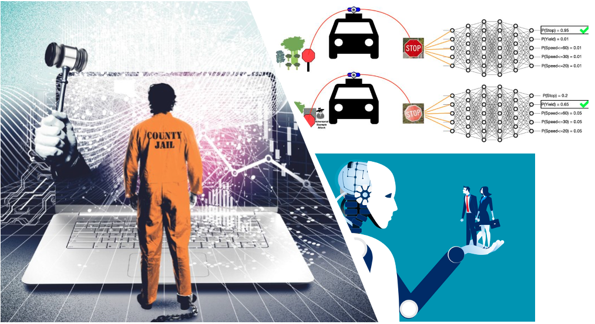

Responsible AI (CS 4390/5390)---Spring 2024
Course Description
Responsible AI is a cross-list special topic course. The primary goal of this course is to study safe, responsible, and trustworthy AI. In previous courses, students have studied computer security, software systems, and machine learning/data mining/AI. In this class, we will explore safety, security, and ethical concerns in AI. After covering the basics such as trust, safety, data, AI software lifecycle, supervised learning, causal logic, generative AI, and large language models; we study responsible AI topics such as privacy, adversarial robustness, distribution shifts, fairness, risks of foundational models (e.g., ChatGPT), Interpretability, Explainability, Transparency, and AI Alignment problem.
The primary goal of this course is to study the opportunities and challenges in deploying AI Software. After covering the basics, students explore topics related to safety, security, robustness, privacy, fairness of AI.

Course Objectives
Upon completion of this course, students will be able to:
- Students have a clear understanding of computations in data-driven and AI-driven software solutions,
- Students can evaluate the security, privacy, and fairness of prevalent AI systems such as deep neural networks and large language models,
- Students understand the limitations of AI-enable software systems, and
- Students can apply AI techniques for social good.
Course Topics
- Establishing AI Trust.
- Machine Learning Lifecycle.
- AI Safety.
- Data Sources, Biases, and Detection Theory.
- Supervised Learning (KNN, Linear Classifiers, Optimization, Backpropagations, and deep neural networks).
- Generative AI and Large Language Models.
- Adversarial Robustness and Data Poisoning.
- Causality (Graphical Models, Causal Discovery, Interventions, and Counterfactuals).
- Privacy.
- Distribution Shift.
- Fairness.
- Explainable AI.
- AI Alignment.
Prerequisite
- This course requires no prior experience in security and privacy but assumes the willingness to seek out and read background material as needed. Although it is not a requirement, knowledge in core topics of machine learning and familiarity with Python and Numpy is a significant advantage.
Course Structure
- This is a research-oriented and discussion-based course, which also includes hands-on exercises and programming assignments. The students are required to write a review for assigned papers prior to the class so that they can participate in class discussions. Every student needs to present a major paper listed in the course syllabus and lead discussions. Students will also work on a major project in group of 1, 2, or 3 and deliver write-ups, code, and presentations in phases.